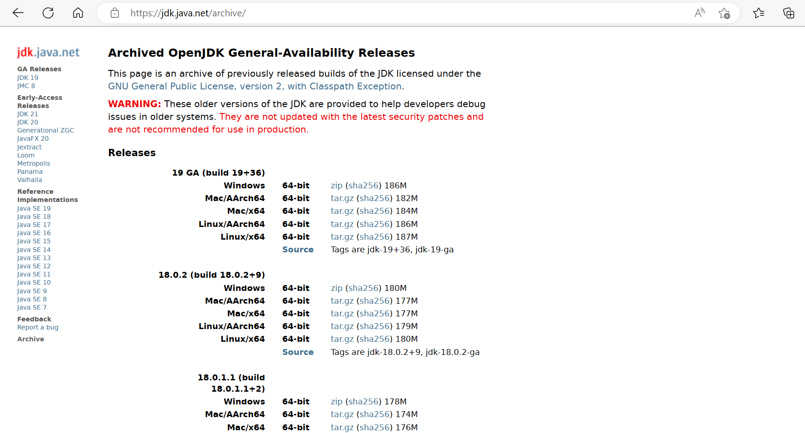
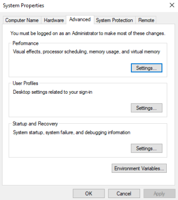
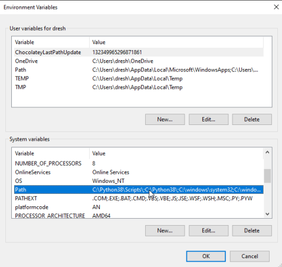
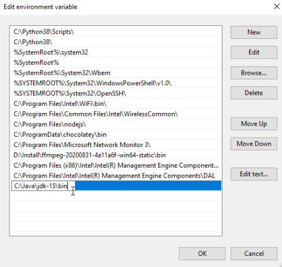
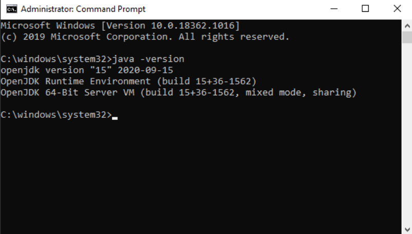

Setting up Java Development Kit (JDK)
Java Development Kit is a distribution that consist of an executable environment(virtual machine), an appropriate set of functionslities and various tools intended for the development of Java programs.
Downloading the JDK
OpenJDK can be downloaded from the following address
https://jdk.java.net/17/The page at this address has links to download the OpenJDK variant that corresponds to the operating system oy your computer.
Under the Builds section you can see links to download the appropriate version of OpenJDK.
After downloading, it is necessary to configure the Java environment.
The firste step in configuring the Java environment on Windows operating systems involves unpacking the downloaded archive. It is recommended creating a folder with the name Java on the primary partition on your hard disk and unpack the contents of the downloaded archive inside it. That way you will get the following folder on your computer C:\Java\jdk-17
There are several folders on this path, at the moment the most important is the bin filder.
Inside the bin folder are all the tools necessary for starting and developing Java programs, primarily the Java virtual machine and the Java compiler.
In order to make these tools easier to use, the path where the following folders are located will necessary be placed within certain system variables :
- the path where the bin folder is located must be placed inside the Path system variable
- the path where the complete JDK is located must be placed inside the JAVA_HOME system variable>
Adding the path inside the Path system variable
1. Open the Control panel -> Advanced System Settings.
2. At the bottom of the window click on option Environment Variables.
3. Find the Path variable and double-click it.
4. In the resulting window, add the path where the bin folder is located. Confirm by clicking the OK button.
Adding the JAVA_HOME system variable
1. Inside the Environment Variables window, click on the New button

2. In the New System Variable window, it is necessary to enter the name and value of the new system variable. The name should be JAVA_HOME, and the value sould be the path where OpenJDK is located.
3. Confirm by clicking the ok button.
Checking the availability of Java tools
In order to be sure that we have completed the previous steps without error, it is enough to open the console/terminal and enter the following command :
java -version
Effect of the command will be the version of the Java environment that exist on the system.